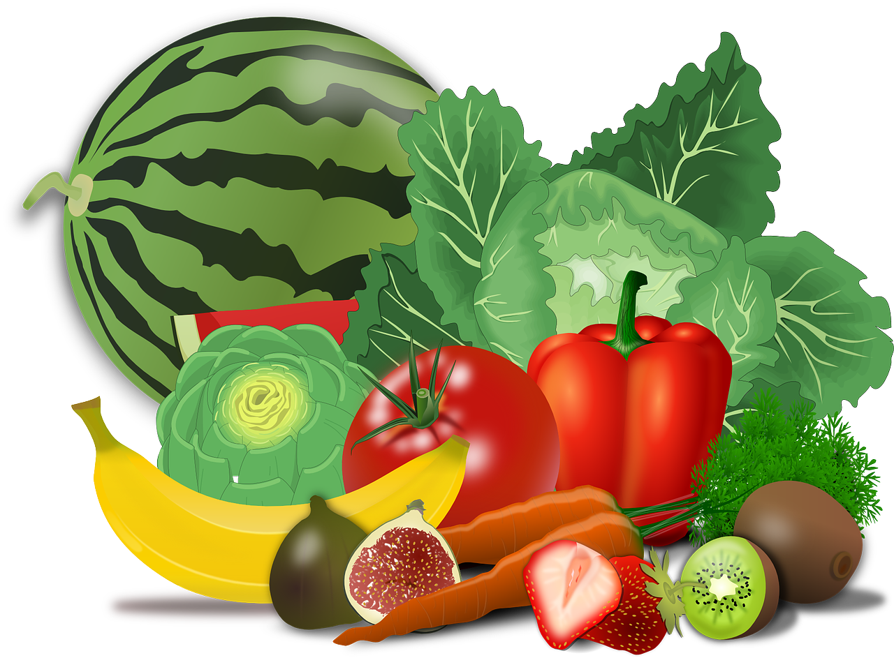
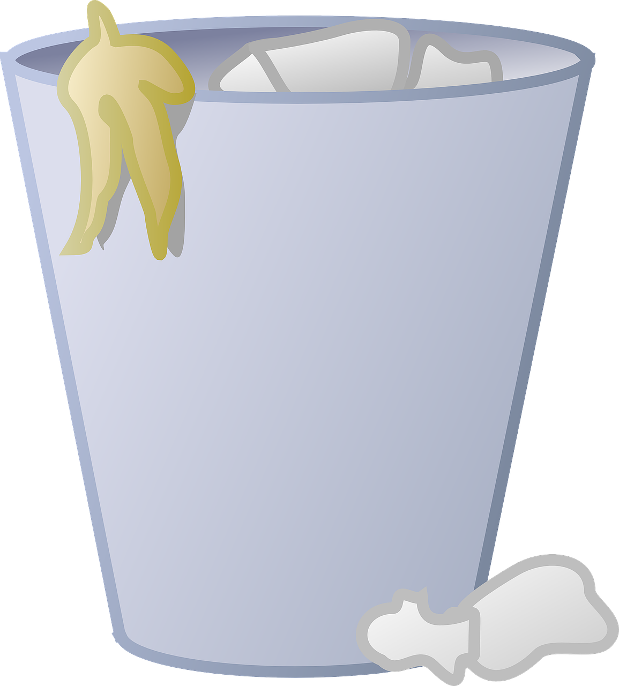
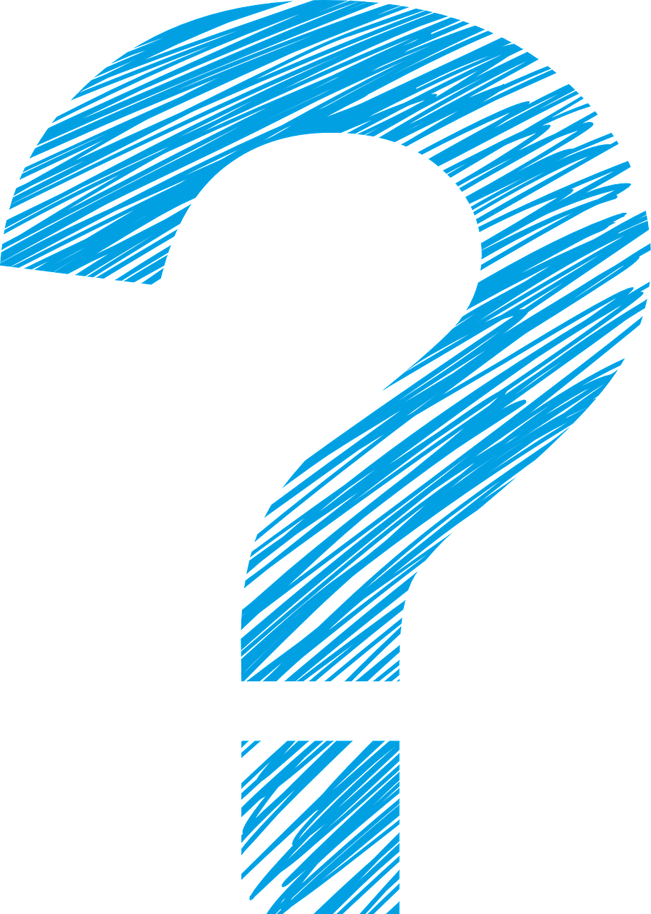
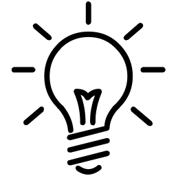
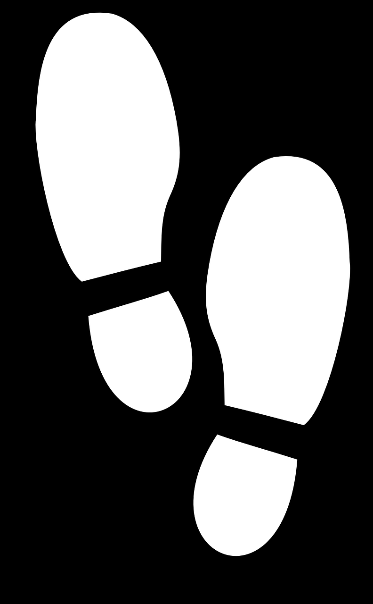

And what you should do about it...
by Srishanmukha Putta 7E-CI "The Gaudium" school Kollur Campus 2024-25
Contents:
- Introduction
- Empowering responsible food consumption.
- Sustainable electricity creation and usage.
- Environmental footprint
Introduction
Over-consumption and production of anything is dangerous. As you'll see, this SDG links to many other SDGs and help stabilize production of things and give knowledge of consuming renewable sources of energy.
Empowering responsible food consumption.
“Households across all continents wasted over 1 billion meals a day in 2022, while 783 million people were affected by hunger and a third of humanity faced food insecurity.” - UNEP
Food wastage is a major problem and is mostly consists of your fruits and vegetables.
Now, not only does this affect both SDG 12 – Responsible consumption and production (because of over-consumption and wastage) AND SDG 2 – Zero hunger (because of food wastage and putting forward an active problem to the SDG) but also SDG 13 – Climate change. This is because as mentioned before, most of this is because of fruits and vegetables, which help balance CO₂ levels in the atmosphere and ultimately – climate change.


Solving this problem contributes to 3 SDGs, so how do we fix this? There are two main ways, promote food conservation – which you might not be able to do – and conserve food – which you probably can do. So, next time you eat, maybe consider putting a bit less on your plate (literally).

Sustainable electricity creation and usage.
Electricity is known for being a useful source of energy, but there are a few big problems with it. The biggest one is how it is made. Most of the time, you heat water to make water vapour (steam) is used to power the turbine which then powers the generator. If you don’t see the problem, it’s heating the water. We can’t electrically heat it as perpetual energy doesn’t exist. So, we use fossil fuels, and making electricity this way becomes the second biggest reason for climate change.
You see, fossil fuels are a type of non-renewable energy. Non-renewable energy sources (like fossil fuels) aren't sustainable for humans in the long term, and will eventually run out. Renewable energy sources are, while may it not be infinite, a sustainable and long-lasting fuel for our civilization.
We can stop this problem by simply using sustainable methods to power turbines. Nuclear energy is the most sustainable type, but nuclear reactors can also cause the most destruction if not handled properly for a very long time. Wind turbines are also pretty sustainable, and don’t cause as much destruction if not handled properly (but still are dangerous, so don’t go near them!) This also contributes heavily to SDG 7 – Responsible consumption and production


Environmental footprint
Poorer countries have one thing in common which can beat the better, richer high-income countries – and that is environmental footprint.
Environmental footprint is the (negative) impact man has on the environment. According to the UN's official SDG website on SDG 12 (which you can find in the footer of this very website) – as of 2018, the material footprint per capita (person) is 24 tons for high-income countries and 2.5 tons for low-income countries. To reduce environmental footprint: stop polluting, conserve energy, and spread the message.
Conclusion:
As I said in the beginning, this SDG is linked to many others, which you can see came out to be true! Thanks for joining me in this journey! (I totally didn’t copy-paste some code from my other projects…)